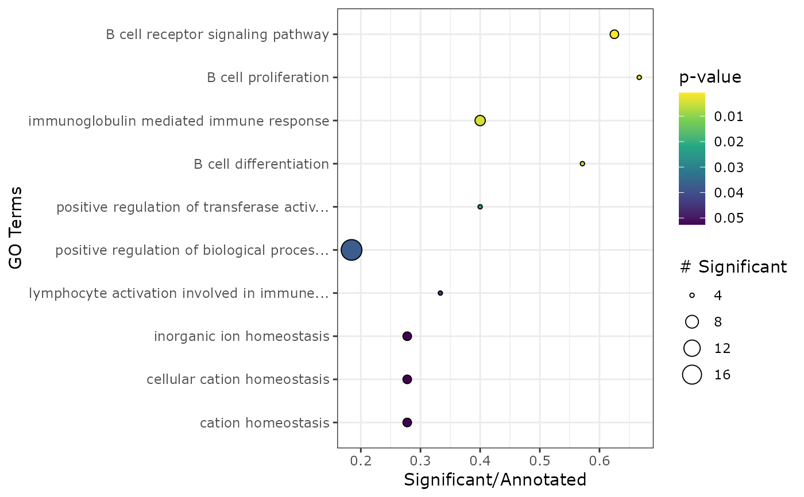

apl_topGO.RdThis function uses the Kolmogorov-Smirnov test as implemented by the package topGO to test for overrepresentation in Gene Ontology gene sets.
apl_topGO(
caobj,
ontology,
organism = "hs",
ngenes = 1000,
score_cutoff = 0,
use_coords = FALSE,
return_plot = FALSE,
top_res = 15
)A "cacomp" object with principal row coordinates and standardized column coordinates calculated.
Character string. Chooses GO sets for 'BP' (biological processes), 'CC' (cell compartment) or 'MF' (molecular function).
Character string. Either 'hs' (homo sapiens), 'mm' (mus musculus) or the name of the organism package such as 'org.*.eg.db'.
Numeric. Number of top ranked genes to test for overrepresentation.
numeric. S-alpha score cutoff. Only genes with a score larger will be tested.
Logical. Whether the x-coordinates of the row APL coordinates should be used for ranking. Only recommended when no S-alpha score (see apl_score()) can be calculated.
Logical. Whether a plot of significant gene sets should be additionally returned.
Numeric. Number of top scoring genes to plot.
A data.frame containing the gene sets with the highest overrepresentation.
For a chosen group of cells/samples, the top 'ngenes' group specific genes are used for gene overrepresentation analysis. The genes are ranked either by the precomputed APL score, or, if not available by their APL x-coordinates.
Adrian Alexa and Jorg Rahnenfuhrer
topGO: Enrichment Analysis for Gene Ontology.
R package version 2.42.0.
library(Seurat)
#> Attaching SeuratObject
set.seed(1234)
cnts <- GetAssayData(pbmc_small, slot = "counts")
cnts <- as.matrix(cnts)
# Run CA on example from Seurat
ca <- cacomp(pbmc_small,
princ_coords = 3,
return_input = FALSE,
assay = "RNA",
slot = "counts")
#> Warning:
#> Parameter top is >nrow(obj) and therefore ignored.
grp <- which(Idents(pbmc_small) == 2)
ca <- apl_coords(ca, group = grp)
ca <- apl_score(ca,
mat = cnts)
#>
|
| | 0%
|
|======= | 10%
|
|============== | 20%
|
|===================== | 30%
|
|============================ | 40%
|
|=================================== | 50%
|
|========================================== | 60%
|
|================================================= | 70%
|
|======================================================== | 80%
|
|=============================================================== | 90%
|
|======================================================================| 100%
enr <- apl_topGO(ca,
ontology = "BP",
organism = "hs")
#>
#> groupGOTerms: GOBPTerm, GOMFTerm, GOCCTerm environments built.
#> Loading required package: org.Hs.eg.db
#> Loading required package: AnnotationDbi
#> Loading required package: stats4
#> Loading required package: BiocGenerics
#> Loading required package: parallel
#>
#> Attaching package: ‘BiocGenerics’
#> The following objects are masked from ‘package:parallel’:
#>
#> clusterApply, clusterApplyLB, clusterCall, clusterEvalQ,
#> clusterExport, clusterMap, parApply, parCapply, parLapply,
#> parLapplyLB, parRapply, parSapply, parSapplyLB
#> The following objects are masked from ‘package:stats’:
#>
#> IQR, mad, sd, var, xtabs
#> The following objects are masked from ‘package:base’:
#>
#> Filter, Find, Map, Position, Reduce, anyDuplicated, append,
#> as.data.frame, basename, cbind, colnames, dirname, do.call,
#> duplicated, eval, evalq, get, grep, grepl, intersect, is.unsorted,
#> lapply, mapply, match, mget, order, paste, pmax, pmax.int, pmin,
#> pmin.int, rank, rbind, rownames, sapply, setdiff, sort, table,
#> tapply, union, unique, unsplit, which.max, which.min
#> Loading required package: Biobase
#> Welcome to Bioconductor
#>
#> Vignettes contain introductory material; view with
#> 'browseVignettes()'. To cite Bioconductor, see
#> 'citation("Biobase")', and for packages 'citation("pkgname")'.
#> Loading required package: IRanges
#> Loading required package: S4Vectors
#>
#> Attaching package: ‘S4Vectors’
#> The following object is masked from ‘package:base’:
#>
#> expand.grid
#>
#> Building most specific GOs .....
#> ( 1419 GO terms found. )
#>
#> Build GO DAG topology ..........
#> ( 3911 GO terms and 8831 relations. )
#>
#> Attaching package: ‘SparseM’
#> The following object is masked from ‘package:base’:
#>
#> backsolve
#>
#> Annotating nodes ...............
#> ( 204 genes annotated to the GO terms. )
#>
#> -- Elim Algorithm --
#>
#> the algorithm is scoring 678 nontrivial nodes
#> parameters:
#> test statistic: fisher
#> cutOff: 0.01
#>
#> Level 13: 5 nodes to be scored (0 eliminated genes)
#>
#> Level 12: 15 nodes to be scored (0 eliminated genes)
#>
#> Level 11: 18 nodes to be scored (0 eliminated genes)
#>
#> Level 10: 29 nodes to be scored (10 eliminated genes)
#>
#> Level 9: 39 nodes to be scored (10 eliminated genes)
#>
#> Level 8: 70 nodes to be scored (10 eliminated genes)
#>
#> Level 7: 100 nodes to be scored (10 eliminated genes)
#>
#> Level 6: 130 nodes to be scored (18 eliminated genes)
#>
#> Level 5: 129 nodes to be scored (18 eliminated genes)
#>
#> Level 4: 86 nodes to be scored (18 eliminated genes)
#>
#> Level 3: 41 nodes to be scored (18 eliminated genes)
#>
#> Level 2: 15 nodes to be scored (18 eliminated genes)
#>
#> Level 1: 1 nodes to be scored (18 eliminated genes)
plot_enrichment(enr)
